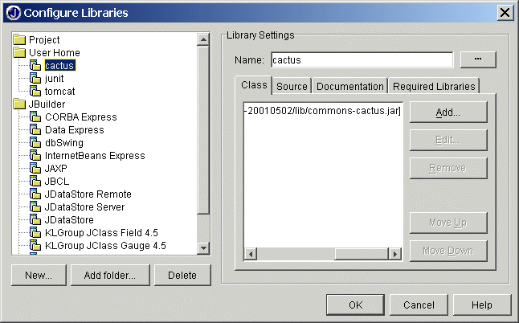
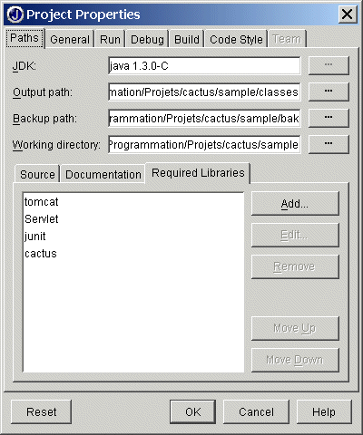

|
Last update : August 31 2002
Doc for : v1.4.1
About
What is Cactus ?
News
Changes
Features/Status
Goals
Roadmap/Todo
Contributors
Contributing
Cactus Users
Tested on ...
License
Downloads
Downloads
Documentation
How it works ?
Getting Started
Mock vs Container
Javadocs
FAQ
Howto Guides
Classpath Howto
Config Howto
Migration Howto
TestCase Howto
Jsp Howto
Runner Howto
Security Howto
Ant Howto
HttpUnit Howto
Sample Howto
EJB Howto
IDE Howto
Tomcat Howto
JUnitEE Howto
Support
Bug database
Mailing list
Misc.
Why the name ?
Logo Challenge
Resources
Test Coverage
Stats
Developers
CVS
Coding Conventions
Build results
Release Checklist
|
| Step 1 : Create JBuilder libraries |
Let's assume the following conventions :
{Cactus dir} is the directory where you
have unzipped the Cactus distribution or sources.
Let's also assume {Tomcat dir} to be the Tomcat directory.

| Create the JUnit library |
Create a JUnit library and include junit.jar.
|
| Create the Cactus library |
Create a Cactus library containing cactus.jar and
aspectjrt.jar (you can actually create a separate
library for AspectJ if you wish).
 |
You can also add the source file directories in the source tab.
This way, you will be able to debug inside cactus sources.
|
|
| Create the tomcat library |
Create another library named tomcat
and add all the jar files from {Tomcat dir}/lib.
|
If you use JBuilder 4 Enterprise or JBuilder 4 Professionnal, you don't need to create
this library because Tomcat 3.1 is provided with those versions.
|
|
|
| Step 2 : Set up the cactus.properties file |
Edit a new file named cactus.properties
(see the Configuration Howto
tutorial for more details on cactus.properties).
Copy your cactus.properties file to a directory present
in your classpath. You can copy it to a directory and add this
directory in the class tab of the cactus library.
|
| Step 3 : Configure Tomcat Environment |
| Create a cactus webapp |
Create and edit the file
{Tomcat dir}/webapps/cactus/WEB-INF/web.xml. Here is an
example for Servlet API 2.2 :
<?xml version="1.0" encoding="ISO-8859-1"?>
<!DOCTYPE web-app
PUBLIC "-//Sun Microsystems, Inc.//DTD Web Application 2.2//EN"
"http://java.sun.com/j2ee/dtds/web-app_2_2.dtd">
<web-app>
<servlet>
<servlet-name>ServletRedirector</servlet-name>
<servlet-class>org.apache.cactus.server.ServletTestRedirector</servlet-class>
</servlet>
<servlet-mapping>
<servlet-name>ServletRedirector</servlet-name>
<url-pattern>/ServletRedirector</url-pattern>
</servlet-mapping>
</web-app>
|
|
|
You can edit {Tomcat dir}/conf/web.xml instead if you
prefer.
You can also edit the web.xml file of the webapp where is
located the servlet(s) you want to test.
Don't forget to modify cactus.properties file accordingly.
|
|
| Step 4 : Configure your project |
-
Put
-classic -Dtomcat.home="{Tomcat dir}" as the VM
parameters for your project and
org.apache.tomcat.startup.Tomcat as the main class.
-
Add the following libraries in the
Required Libraries
tab in the project properties :
- tomcat
- servlet
- junit
- cactus

|
| Step 5 : Test and debug your servlet |
| Test your servlet |
-
Start Tomcat using the
Run/Run Project menu.
-
Run your unit tests : right Click on the file containing your test
case and click on
run
|
| Debug your servlet and your tests |
You can easily print the results of the methods on the server-side
itself.
You can also start Tomcat in debug mode (Run/debug
project). This way, you can stop at breakpoints on methods
that are executed on the server side (void testXXX() for
example)
If you right click on the file containing your test case and click
on debug, you can stop at breakpoints on methods that
are executed on the client side like
void endXXX(WebResponse) or
void beginXXX(WebRequest)
|
|
|
|